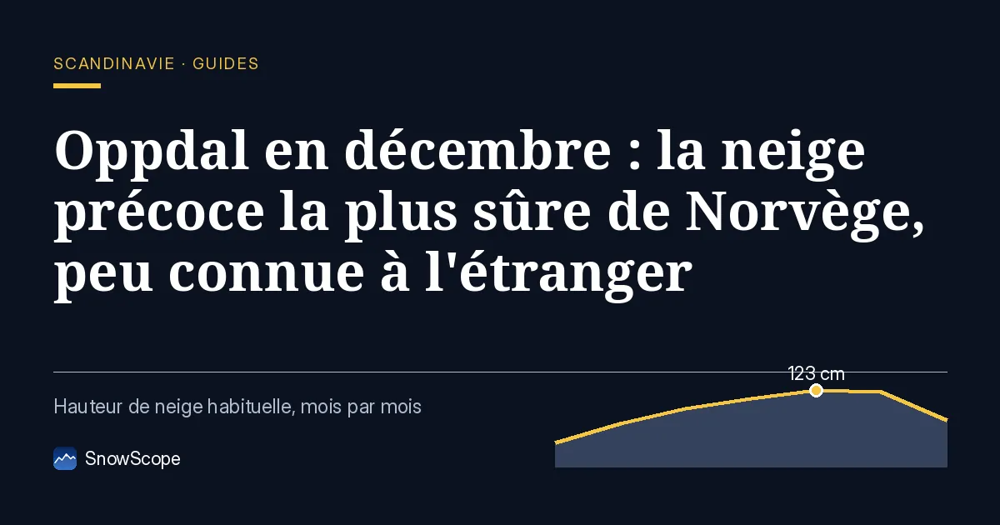

Oppdal en décembre : la neige précoce la plus sûre de Norvège, peu connue à l'étranger
Y a-t-il assez de neige à Oppdal en décembre ? Dans nos 46 hivers d'historique, presque toujours. Un 15 décembre typique, le bas (585 m) a 60 cm, et 93 % des hivers y avaient 30 cm ou plus la semaine du 15 au 21 décembre. C'est le meilleur bilan au pied des pistes de toutes les stations norvégiennes comparées.
Consultez les prévisions neige en temps réel pour Oppdal sur l'application SnowScopeHauteurs de neige, alertes poudreuse et carte 3D, gratuitement.
Assez de neige en décembre ? Oui, dès le bas
Oppdal se trouve à l'intérieur des terres, entre le Dovrefjell et Trondheim, dans une vallée sèche et froide qui garde sa neige. Le domaine compte 41 km de pistes cartographiées et 15 remontées entre 585 m et 1327 m. Sa particularité en décembre : la neige est presque aussi bonne en bas qu'en haut, avec 60 cm, 64 cm et 72 cm en bas, à mi-pente et au sommet un 15 décembre typique.


Trois altitudes, presque une seule réponse
La part des hivers avec 30 cm ou plus la semaine du 15 au 21 décembre est de 93 % en bas, 96 % à mi-pente et 98 % au sommet. La semaine de Noël : 96 %, 98 % et 98 %. Même une année maigre (1 sur 10) garde 30 cm en bas et 40 cm à mi-pente le 15 décembre.
La réserve honnête, c'est la tendance. La moyenne de décembre en bas est passée de 71 cm sur les 15 premiers hivers à 46 cm sur les 15 derniers. L'hiver dernier comptait 38 cm aux trois altitudes le 15 décembre : skiable, mais bien sous l'ancienne normale.
Le prix
Les forfaits d'Oppdal sont vendus à prix dynamiques dans la boutique officielle en ligne de l'exploitant. Le 13 novembre 2026, nous n'avons pu lire aucun prix fixe sur la page officielle, donc nous n'en donnons pas. Réservez tôt en ligne et pensez aux dates d'avant les vacances de Noël.
Et Trysil ?
Trysil est plus grand (101 km de pistes cartographiées) et plus connu, mais en décembre son bas (407 m) est bien plus faible : 26 cm un 15 décembre typique et 52 % des hivers avec 30 cm la semaine du 15 au 21 décembre. Sa mi-pente (44 cm, 83 %) et son sommet (60 cm, 89 %) sont bons, mais restent sous Oppdal.
Si vous voulez de la neige partout en décembre, y compris sur les pistes débutants du bas, Oppdal est le choix le plus sûr.
Organiser le voyage
Oppdal est sur l'axe ferroviaire et routier Oslo-Trondheim, accessible sans longue route de montagne. Si loin au nord, les journées de décembre sont courtes : prévoyez moins d'heures sur les pistes, commencez tôt et pensez au froid, les vallées sèches étant souvent les plus froides.
Conseils aux skieurs
- Familles avec débutants : le bas d'Oppdal avait 30 cm mi-décembre dans 93 % de nos hivers, les pistes faciles sont donc en général couvertes.
- Achetez le forfait en ligne et tôt ; les prix changent selon la date.
- Équipez-vous pour le grand froid et les journées courtes, et prenez la première remontée.
- Hors-piste dans le Dovrefjell : lisez d'abord l'alerte avalanche norvégienne (varsom.no).
Autres cartes (sites externes)
Références et crédits
- Oppdal: official lift-pass page of the operator (prices by date; no fixed price quoted), checked 13 November 2026 www.alpinco.com/en/oppdal/buy-day-pass-1-8-days
- Trysil: official lift-pass page of the operator (prices by date; no fixed price quoted), checked 13 November 2026 www.skistar.com/en/winter/skipass/buy-skipass/lift-pass-trysil/
À propos de ces chiffres
Chiffres de neige : historique SnowScope, 46 hivers passés (1980-81 à 2025-26) aux altitudes de la station, corrigé de l'altitude (une estimation pour une zone, pas les bulletins de la station) ; « bonne neige » = 30 cm ou plus au sol en moyenne sur la semaine. Carte : notre hauteur habituelle au 15 décembre répartie sur le relief selon l'altitude. Pistes et remontées : cartographie OpenSkiMap. Forfaits : grilles officielles des stations, vérifiées le 13 novembre 2026 ; les prix peuvent changer.
Bulletins d'avalanche officiels: Varsom (NVE)
Citer ce bulletin
Pour la recherche, l'enseignement ou la presse : chiffres et graphiques réutilisables librement sous CC BY 4.0 avec cette citation.
SnowScope (2026), Oppdal en décembre : la neige précoce la plus sûre de Norvège, peu connue à l'étranger, https://snowscope.app/blog/fr/2026/11/oppdal-december-skiing-snow-reliable-norway.html, consulté le 2026-11-14
SnowScope (Atlas Labs). (2026, November 14). Oppdal en décembre : la neige précoce la plus sûre de Norvège, peu connue à l'étranger. SnowScope snow reports. https://snowscope.app/blog/fr/2026/11/oppdal-december-skiing-snow-reliable-norway.html
BibTeX
@misc{snowscope2026oppdaldecemberskiingsnow,
author = {{SnowScope (Atlas Labs)}},
title = {Oppdal en décembre : la neige précoce la plus sûre de Norvège, peu connue à l'étranger},
year = {2026},
month = nov,
howpublished = {\url{https://snowscope.app/blog/fr/2026/11/oppdal-december-skiing-snow-reliable-norway.html}},
note = {Published 2026-11-14 13:44 UTC; accessed 2026-11-14}
}· CC BY 4.0 · Méthodes, données et outils →
Oppdal : neige et température selon l'altitude, cet hiver vs l'hiver dernier (outils) →
Suivre Oppdal
Gratuit : un message quand la neige arrive, et la météo chaque matin.